BogoTRANS
Distrito diverso
Línea gratuita 310-864-4214
BogoTRANS
Distrito diverso
Línea gratuita 310-864-4214
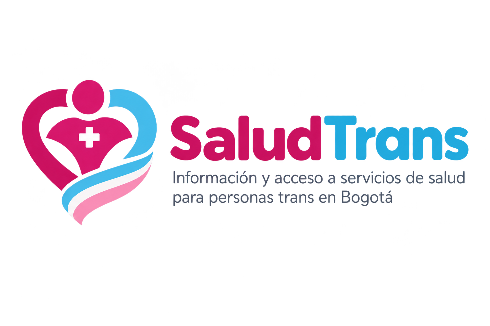
Somos tu aliado digital. Aquí encontrarás información clara, actualizada y sin discriminación sobre servicios de salud gratuitos para las mujeres trans de Bogotá.
6+ Aliados
100% Gratuitos tus servicios
24/7 Estamos para ti
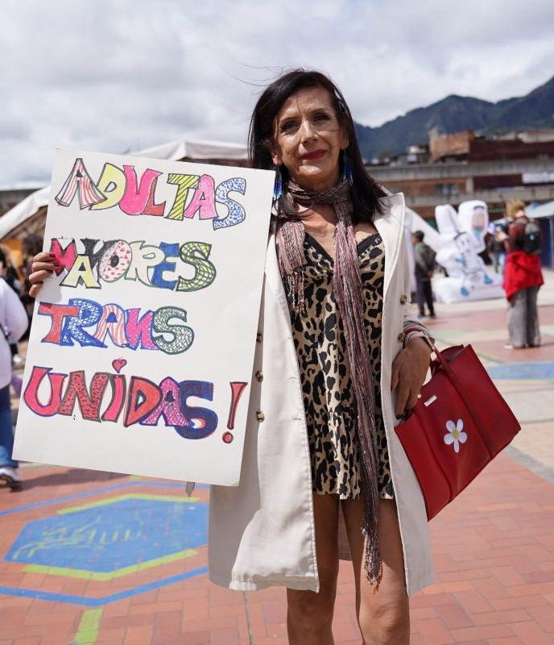
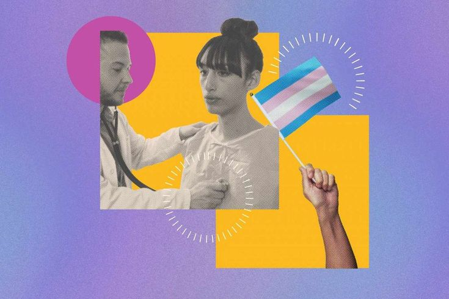
Informacion actualizada y verificada sobre los servicios gratuitos a los que tienes derecho como mujer trans en Bogota.
Accede a esquemas de vacunacion sin costo: Hepatitis A y B, VPH, influenza y mas. Tu salud es un derecho no un privilegio.
VIH, ITS, perfil hormonal, citologia y examanes de laboratorio sin costo en centros especializados que te atienden con respeto.
Consultas de medicina general, salud mental, terapia hormonal y acompañamiento integral en IPS o EPS que conocen y respetan tu identidad.
Orientacion para cambio de documentos, identidad de genero, acceso a derechos y rutas de atencion ante discriminacion en salud.
Muchos de estos servicios estan disponibles sin importar tu regimen de salud o situacion migratoria.
Ver AliadosCentros de salud verificados que brindan atencion respetuosa, sin discriminacion y con perspectiva de genero diverso.
Calle 45 #13-28, Chapinero Bogotá
VIH/ETS
Salud mental
Terapia hormonal
Ver mas informacionLun-Vie 7am-5pm
6013456789
Carrera 7 #32-11, Santa Fe, Bogotá
Vacunacion
Examenes de laboratorio
Consulta general
Ver mas informacionLun-Sáb 8am-6pm
6012345678
Av. Ciudad de Cali #4-05 Sur, Kennedy
Medicina general
Psicologia
Nutricion
Ver mas informacionMar-Sáb 7am-4pm
6014567890
Calle 22 #6-10, La Candelaria, Bogotá
Trabajo social
Salud sexual
Apoyo juridico
Ver mas informacionLun-Vie 8am-5pm
6015678901
Carrera 30 #45-80, Teusaquillo
Terapia hormonal
Dermatologia
Cirugia menor
Ver mas informacionLun-Vie 7am-7pm
6016789012
Calle 57 #9-64, Chapinero Alto
Vacunacion VPH
VIH
Consejeria
Ver mas informacionLun-Dom 6am-10pm
6017890123
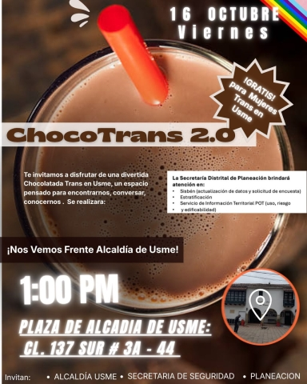
Acercate y disfruta de este espacio diseñado y pensando para ti.
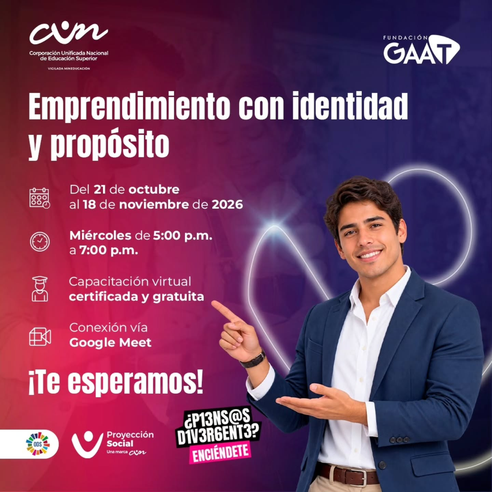
Ven y explora todas las opciones de emprendimiento que tenemos pensadas para ti.
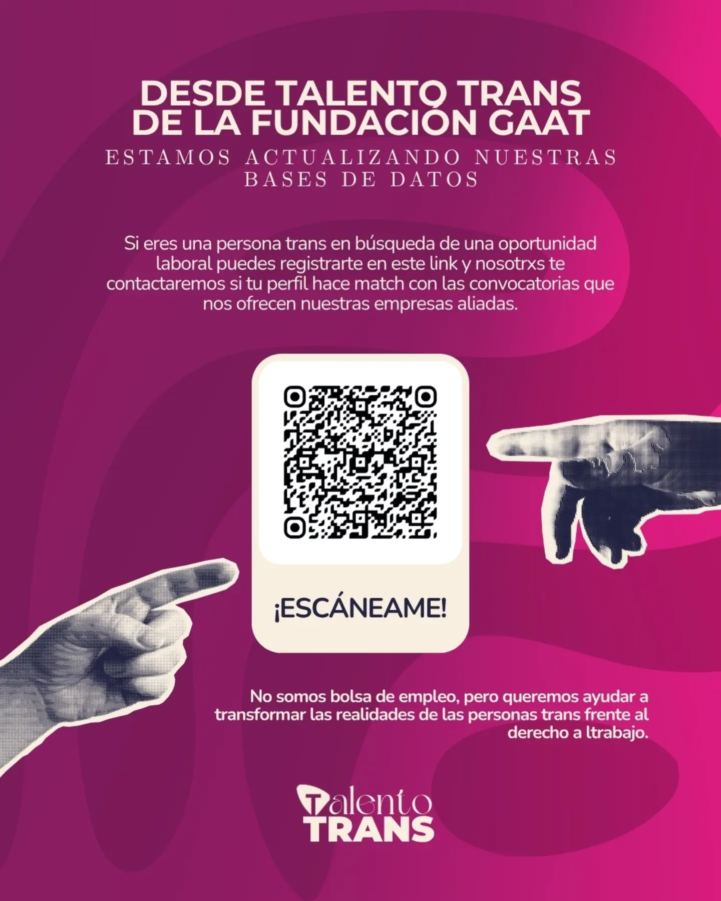
En nuestra jornada de empleo te ayudamos y guiamos en tus procesos de seleccion.
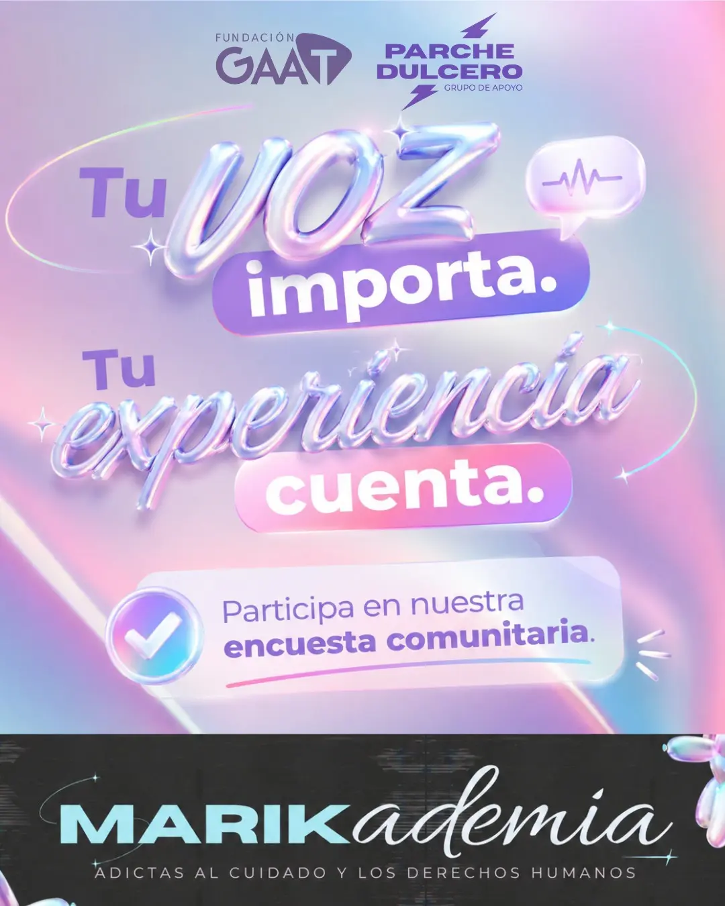
Encuentra espacios para ser escuchadx, porque cada testimonio puede ser de gran ayuda para alguien.
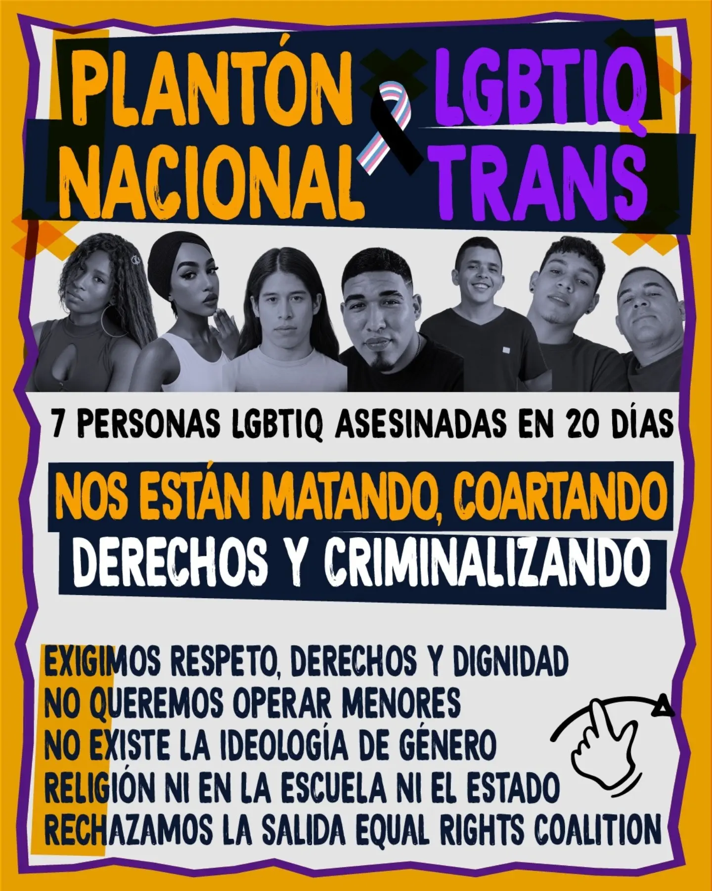
Nunca mas tratadxs como una minoria, acompañanos.
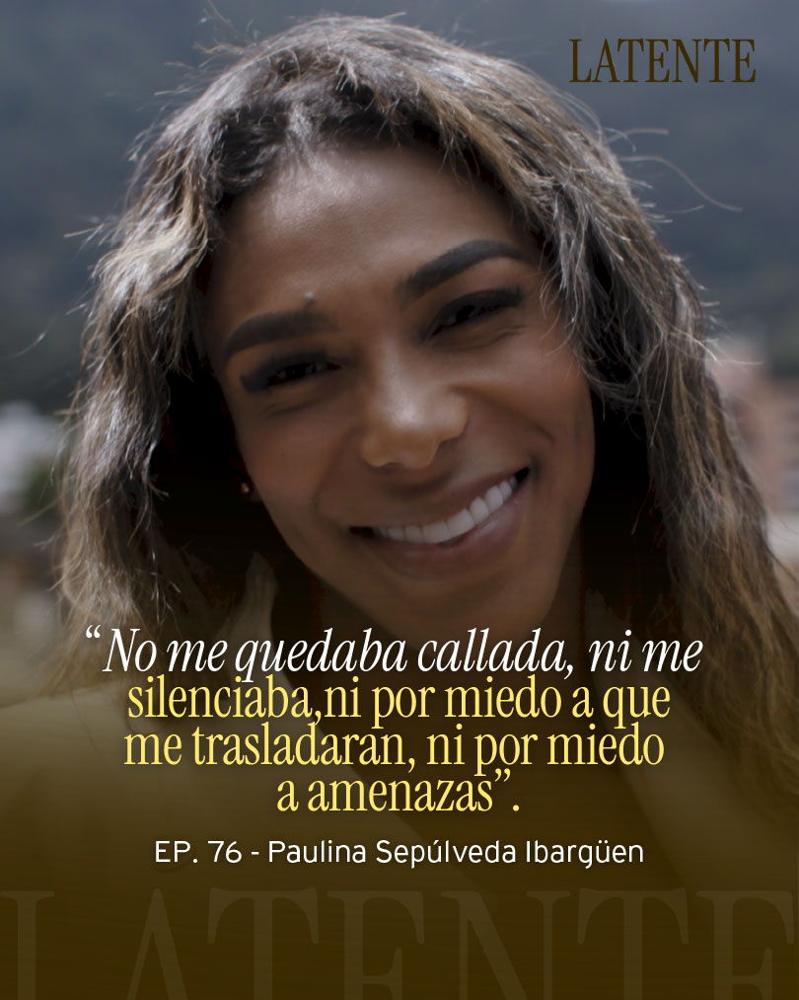
Escuchemos el testeminio de Paulina Sepulveda, su vida, altos y bajos; Nos enseña como apropiarnos de nuestro espacio y a incomodar para enseñar.
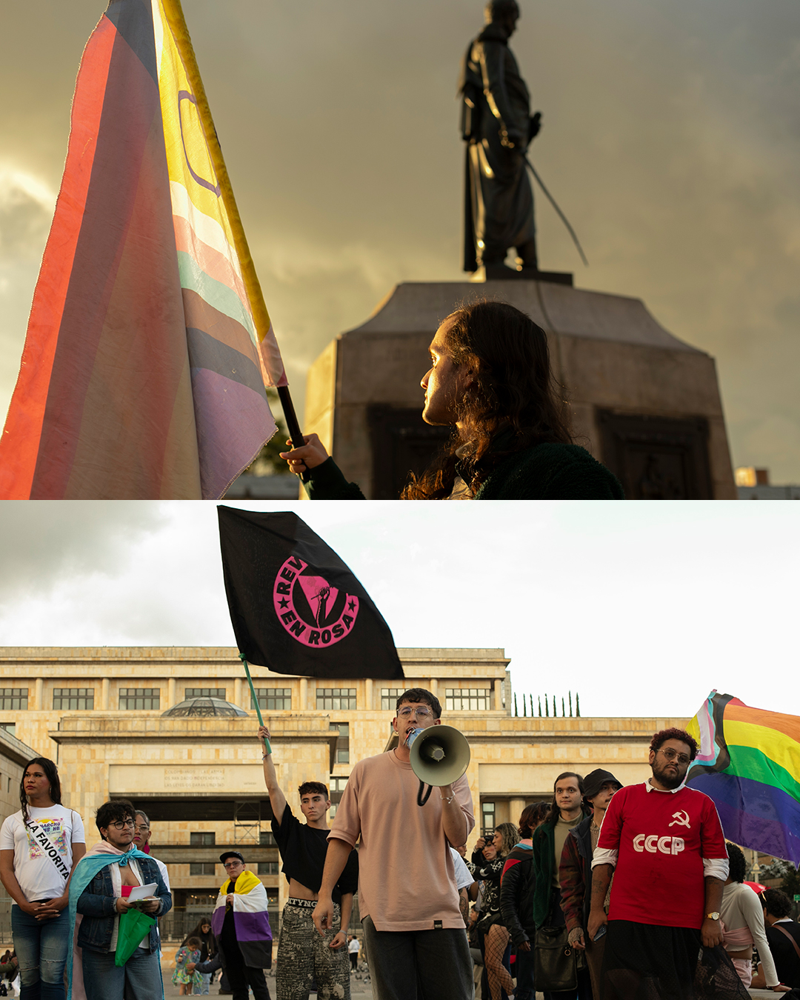
Recuerda que siempre alzando la voz, enseñando y concientizando formaremos país.
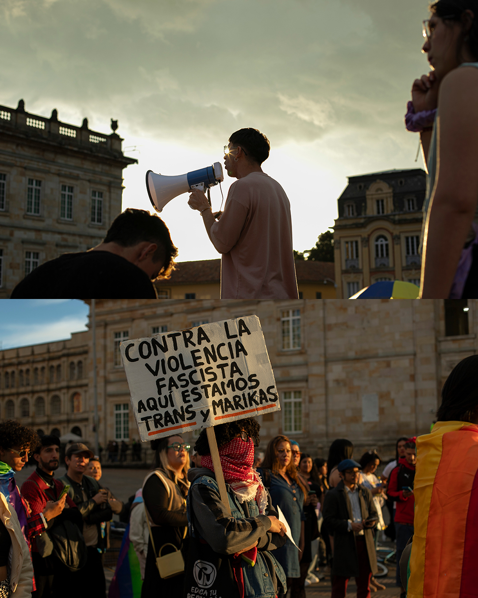
Nunca mas siento minoria, acompañanos en nuestra lucha diaria y por ser escuchadxs.
En Salud Trans somos una plataforma digital aliada que busca asegurar un trato digno, respetuoso y empático para las mujeres transgénero en el sistema de salud.
No somos médicos, sino una compañía que actúa como un puente de información y respaldo. Nuestro propósito es facilitar el acceso a información clara y recursos que puedan ayudarte durante tu experiencia en el sistema de salud.
Centralizamos información médica clave, guías y recursos validados en un lenguaje claro y accesible. Queremos darte herramientas para asistir a tus consultas con seguridad, tomar decisiones informadas sobre tu cuerpo y exigir una atención médica libre de discriminación.